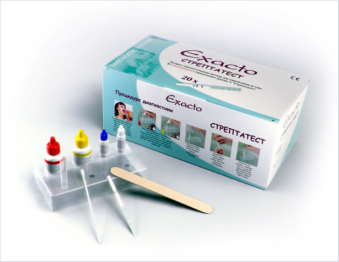
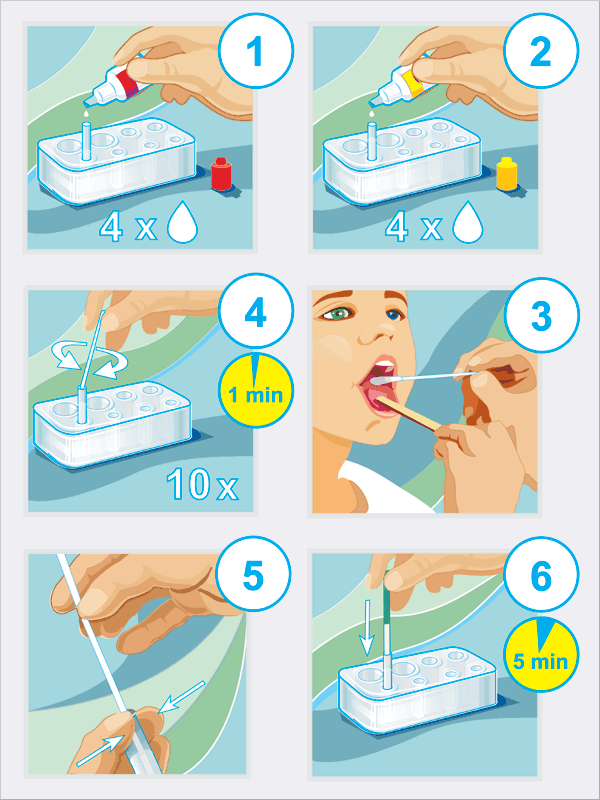
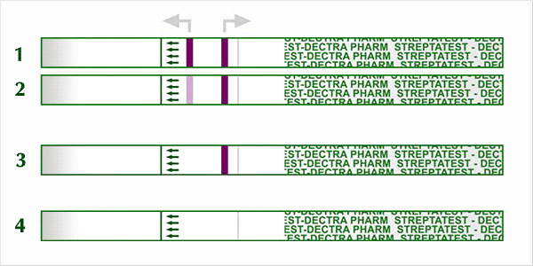

Год назад (в июне 2010 г.) в России зарегистрирован экспресс-тест (Streptatest, компания Laboratoires Dectra Pharm & Sbh) для диагностики тонзиллофарингита, вызванного β‑гемолитическим стрептококком группы А (БГСА, S. pyogenes) (регистрационное удостоверение № ФСЗ 2010/07266 от 24 июня 2010 г.).
Год назад (в июне 2010 г.) в России зарегистрирован экспресс-тест (Streptatest, компания Laboratoires Dectra Pharm & Sbh) для диагностики тонзиллофарингита, вызванного β‑гемолитическим стрептококком группы А (БГСА, S. pyogenes) (регистрационное удостоверение № ФСЗ 2010/07266 от 24 июня 2010 г.).
Стрептатест широко используется в ЕС уже в течение более 8 лет. Во Франции с 2002 г. использование Стрептатеста включено в долгосрочную правительственную программу, посвящённую борьбе с антибиотикорезистентностью, организованную Министерством здравоохранения Франции. В программе задействовано более 60000 врачей разных специальностей. В результате использование антибиотиков на территории Франции сократилось на 50%, 72% врачей изменили свою тактику лечения ангин и хронических тонзиллитов.

После появления Стрептатеста в РФ им стали пользоваться в ведущих клиниках (1 МГМУ им. Сеченова, Научном Центре здоровья детей Российской Академии медицинских наук, НИИ педиатрии и детской хирургии, РДКБ, МОНИКИ), в крупных ведомственных и муниципальных клиниках (Управления делами президента, Министерства обороны, МВД, Газпром, Ингосстрах, РЖД). В настоящее время завершается ещё одно постмаркетинговое клиническое исследование Стрептатеста в НИИАХ. На кафедре детских болезней 1 МГМУ им. Сеченова снят обучающий фильм — «Тонзиллофарингит у детей. Рациональный выбор терапии».
НИИ антимикробной химиотерапии считает целесообразным ещё раз привлечь внимание врачей к целесообразности и необходимости использования Стрептатеста для экспресс-диагностики стрептококкового тонзиллофарингита как у детей, так и у взрослых пациентов с целью рационализации использования антибиотиков при тонзиллофарингитах.
Рис. 1. Алгоритм проведения диагностической процедуры с использованием Стрептатеста.

Рис. 2. Интерпретация результатов.

1-2 — положительный результат
3 — отрицательный результат
4 — некорректное проведение процедуры (истёк срок годности тест-системы, неправильно приготовлен раствор реактивов, тест-система подвергалась воздействию температур, превышающих допустимые значения (+2…+30°C).
Официальным импортёром Streptatest на территории России является ООО «Сатиус» (тел. 8(499) 340-0-394), www.satius.su — на данном сайте можно найти более подробную информацию, касающуюся всех аспектов использования Стрептатеста.